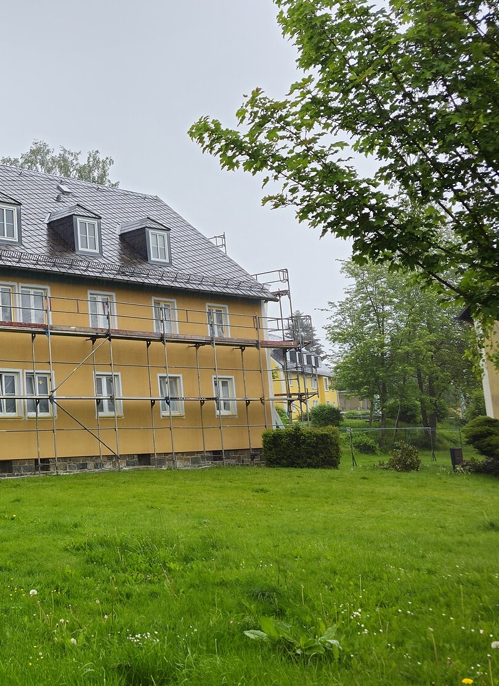
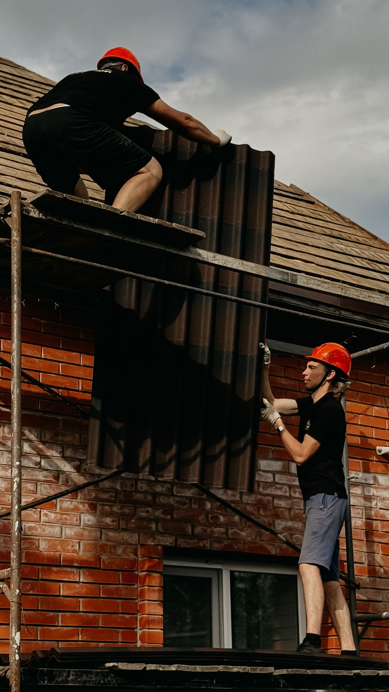
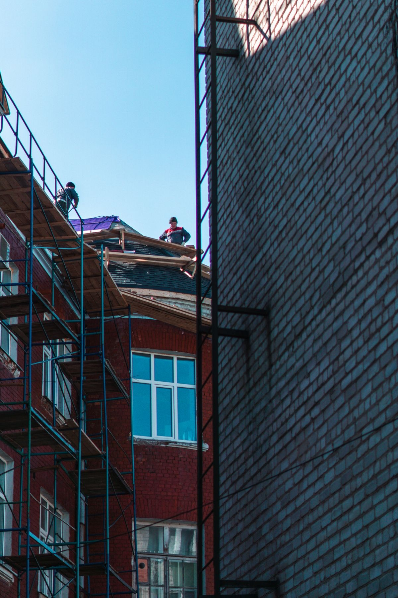
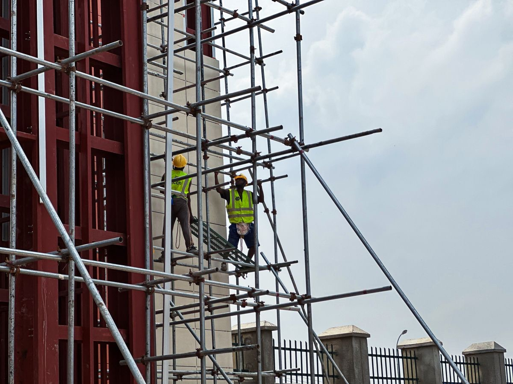

The scaffolders on site hold the recognised competency card for this trade.
South Wales
Domestic scaffold
hire services
in Cardiff.
Cardiff, Caerphilly, Risca, Rogerstone, Newport and the surrounding areas.
- Roof access
- Extensions
- Narrow access
- Towers
- Temporary structures
The job
What do you need scaffolding for?
Pick the work and we will come back with a free, no-obligation quote.
Services
Access built around the house.

Domestic scaffold hire
Loft conversions, extensions, rendering, painting and everyday house repairs.

Roof access
Platforms for roof repairs, chimneys and solar installation.

Narrow access
Side returns, terraces and plots a standard tower will not fit.

Towers and temporary structures
Short-term platforms, towers and access for lifting materials.
Gallery
Recent projects

Timber boards and brick guards along the roof, with a safety gate at the lift. Access for the roof, the windows and the wall.
Brick houseWhy us
Why customers choose us
From a loft conversion to a tight plot or a temporary structure, the job is planned around the site.
We look at the property before pricing it. The quote is free and there is no obligation.
The scaffold stays while the work needs it, and comes down promptly when you are finished.
Service area
Where we work
SteelRig is a trusted scaffolding company serving Cardiff, Barry, Caerphilly, Newport and communities throughout South Wales. From domestic projects such as loft conversions and home extensions to temporary structures and demanding specialist contracts, we provide reliable scaffolding.
Our experienced, CISRS-accredited team is equipped for challenging sites. Whatever the scale of the job, the focus is safe, dependable access.
- Scaffolding Cardiff
- Scaffolding Barry
- Scaffolding Caerphilly
- Scaffolding Newport
- Scaffolding Dinas Powys
- Scaffolding Taff's Well
- Scaffolding Rogerstone
- Scaffolding Bedwas
- Scaffolding Abertridwr and Senghenydd
- Scaffolding Church Village
- Scaffolding Pontyclun
- Scaffolding Llanbradach
- Scaffolding Beddau
- Scaffolding Ystrad Mynach
- Scaffolding Llantrisant
- Scaffolding Talbot Green
- Scaffolding Llanharan and Brynna
- Scaffolding Caerleon
- Scaffolding Pencoed
- Scaffolding Llanharry
- Scaffolding Abercynon
- Scaffolding Nelson
- Scaffolding Bargoed
- Scaffolding Pontllanfraith
- Scaffolding Newbridge
- Scaffolding Abercarn
- Scaffolding Risca
- Scaffolding Treharris
- Scaffolding Oakdale
How it works
Six steps, then the scaffold comes down.
Contact
Get your free, no-obligation quote today.
Cost-effective and reliable scaffolding across Cardiff, Pontyclun, Bargoed and Rogerstone.